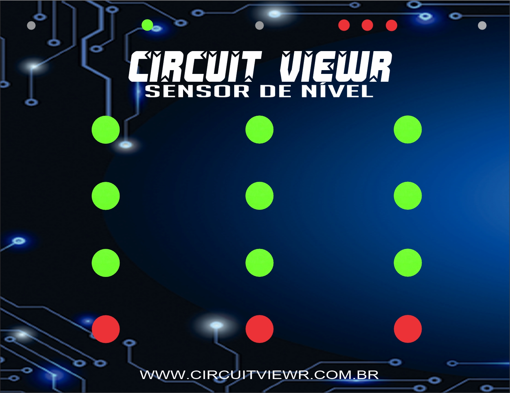
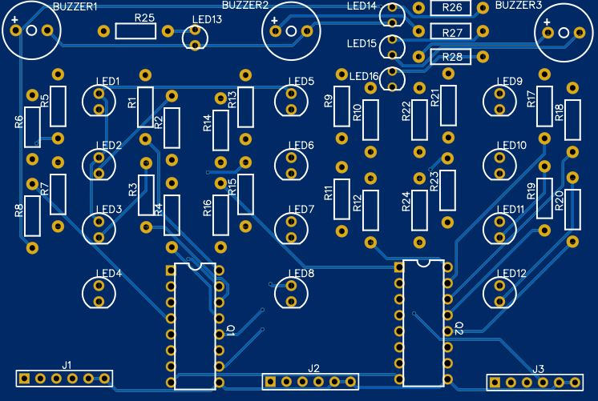

Sensor de nível
Conheça o nosso produto:
O sensor Circuit Viewr chega no mercado para ajudar empresas de pequeno e grande porte no acompanhamento dos níveis de seus reservatórios, seja ele: Cisterna, caixa d'água, poço entre outros
Protótipo Final
Diagrama Esquemático
